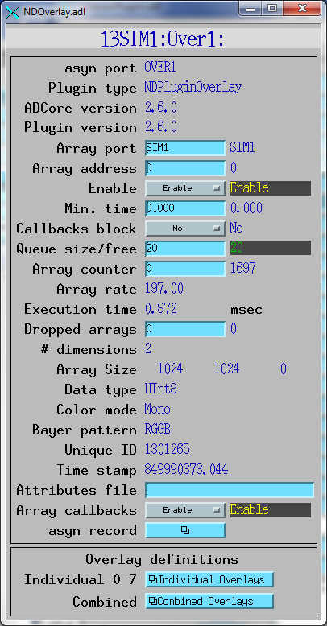
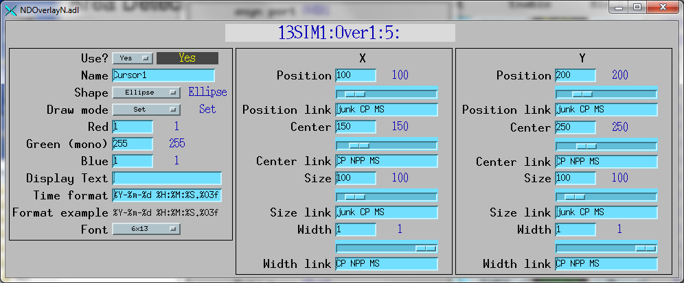
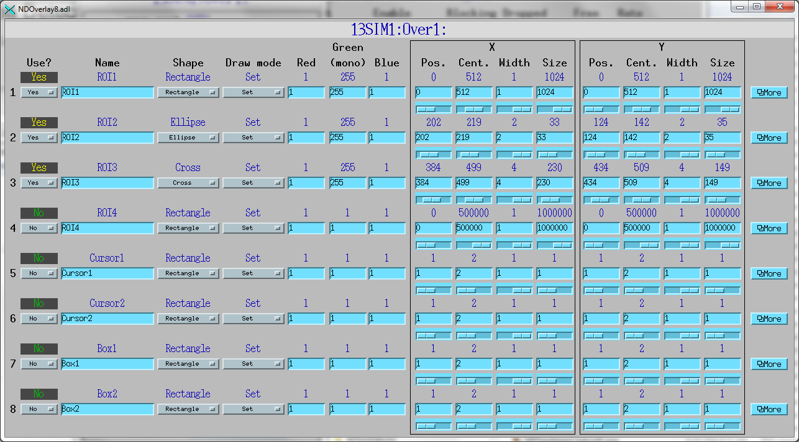
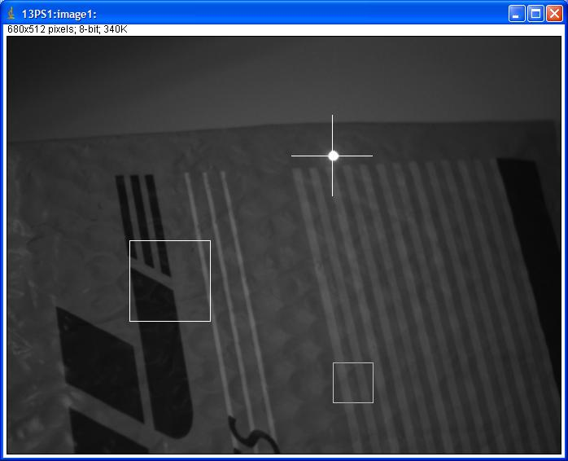

NDPluginOverlay
- author:
Mark Rivers, University of Chicago
Overview
NDPluginOverlay adds graphics overlays to an NDArray image. It can be used to highlight ROIs on an image, to implement cursors, add text annotation, and other similar operations. It supports any number of overlay objects. For each object there is control of the location, size, line width, color, and drawing mode. The size, line width and location can be directly controlled, or links can be used to control the position and size from other PVs. For example, links to the PVs definining an ROI in the NDPluginROI plugin can be used to define a rectangular overlay in thus plugin. Similarly links to the PVs defining the X and Y centroid and sigma of an image computed in the NDPluginStats plugin can be used to control the location and size of a crosshair overlay in this plugin. The cursor will then follow the location of a “beam” in the image. Putting such graphics overlays into an areaDetector plugin allows the use of simple image display clients, which don’t need to compute the graphics themselves.
Each NDPluginOverlay plugin can contain any number of overlay objects, each with a different shape, position, color, etc. The number of overlay objects is defined when the NDPluginOverlay is created in the startup script. Each object is referenced by its asyn “addr” address field.
NDPluginOverlay is both a recipient of callbacks and a source of NDArray callbacks. This means that other plugins, such as the NDPluginStdArray plugin, can be connected to an NDPluginOverlay plugin. In that case an image display client will receive the arrays with the graphics overlays.
NDPluginOverlay can only be used for 2-D arrays or 3-D color arrays, it is not fully N-dimensional.
NDPluginOverlay inherits from NDPluginDriver. The NDPluginOverlay class documentation describes this class in detail.
NDPluginOverlay.h defines the following parameters. It also implements
all of the standard plugin parameters from
NDPluginDriver. There are 2 EPICS
databases for the NDPluginOverlay plugin. NDOverlay.template provides
access to global parameters that are not specific to each overlay
object. There are currently no records in this database, because it
currently needs nothing beyond what is contained in
NDPluginBase.template, but there may be records added to this in the
future. NDOverlayN.template provides access to the parameters for each
individual overlay object, described in the following table. Note that
to reduce the width of this table the parameter index variable names
have been split into 2 lines, but these are just a single name, for
example NDPluginOverlayName.
Parameter Definitions in NDPluginOverlay.h and EPICS Record Definitions in NDOverlayN.template |
||||||
|---|---|---|---|---|---|---|
Parameter index variable |
asyn interface |
Access |
Description |
drvInfo string |
EPICS record name |
EPICS record type |
NDPluginOverlay, Name |
asynOctet |
r/w |
Name for this overlay. |
NAME |
$(P)$(R)Name, $(P)$(R)Name_RBV |
stringout, stringin |
NDPluginOverlay, Use |
asynInt32 |
r/w |
Flag indicating whether to use (enable) this overlay. 0=No, 1=Yes. |
USE |
$(P)$(R)Use, $(P)$(R)Use_RBV |
bo, bi |
NDPluginOverlay, OverlayPositionX |
asynInt32 |
r/w |
The X position of this overlay. This is the left edge of the overlay. This will automatically update if CenterX is changed. |
OVERLAY_POSITION_X |
$(P)$(R)PositionX, $(P)$(R)PositionX_RBV |
longout, longin |
N.A. |
N.A. |
r/w |
Link to fetch the desired X position of this overlay. The .DOL field of this record can be set to another record which will then change PositionX whenever the other record updates. The link must have the “CP” attribute, so that this record processes whenever the record it is linked to changes. For example, the link could be set to “13PS1:Stats1:CentroidX_RBV CP NMS” to fetch its position from the X centroid calculated by an NDPluginStats plugin, or to “13PS1:ROI1:MinX_RBV CP MS” to fetch its position from the X position of an ROI. If this link field is blank or points to a non-existent record then the X position of the overlay can be manually controlled. Note that this linking is done entirely in the EPICS database, and not in the plugin code. |
N.A. |
$(P)$(R)PositionXLink |
longout |
NDPluginOverlay, OverlayPositionY |
asynInt32 |
r/w |
The Y position of this overlay. This is the top edge of the overlay. This will automatically update if CenterY is changed. |
OVERLAY_POSITION_Y |
$(P)$(R)PositionY, $(P)$(R)PositionY_RBV |
longout, longin |
N.A. |
N.A. |
r/w |
Link to fetch the desired Y position of this overlay. See the notes for PositionXLink above. |
N.A. |
$(P)$(R)PositionYLink |
longout |
NDPluginOverlay, OverlayCenterX |
asynInt32 |
r/w |
The X position of the center of this overlay. Sometimes it is more convenient to specify the center of the overlay rather than the left edge. This will automatically update if CenterX or SizeX is changed. |
OVERLAY_CENTER_X |
$(P)$(R)CenterX, $(P)$(R)CenterX_RBV |
longout, longin |
N.A. |
N.A. |
r/w |
Link to fetch the desired X center of this overlay. See the notes for PositionXLink above. |
N.A. |
$(P)$(R)CenterXLink |
longout |
NDPluginOverlay, OverlayCenterY |
asynInt32 |
r/w |
The Y position of the center of this overlay. Sometimes it is more convenient to specify the center of the overlay rather than the top edge. This will automatically update if CenterY or SizeY is changed. |
OVERLAY_CENTER_Y |
$(P)$(R)CenterY, $(P)$(R)CenterY_RBV |
longout, longin |
N.A. |
N.A. |
r/w |
Link to fetch the desired Y center of this overlay. See the notes for PositionXLink above. |
N.A. |
$(P)$(R)CenterYLink |
longout |
NDPluginOverlay, OverlaySizeX |
asynInt32 |
r/w |
The X size of this overlay. This does not apply to Text overlay shapes. |
OVERLAY_SIZE_X |
$(P)$(R)SizeX, $(P)$(R)SizeX_RBV |
longout, longin |
N.A. |
N.A. |
r/w |
Link to fetch the desired X size of this overlay. See the notes for PositionXLink above. |
N.A. |
$(P)$(R)SizeXLink |
longout |
NDPluginOverlay, OverlaySizeY |
asynInt32 |
r/w |
The Y size of this overlay. This does not apply to Text overlay shapes. |
OVERLAY_SIZE_Y |
$(P)$(R)SizeY, $(P)$(R)SizeY_RBV |
longout, longin |
N.A. |
N.A. |
r/w |
Link to fetch the desired Y size of this overlay. See the notes for PositionXLink above. |
N.A. |
$(P)$(R)SizeYLink |
longout |
NDPluginOverlay, OverlayWidthX |
asynInt32 |
r/w |
The X line width of this overlay. For the cross overlay this will increase the width of the line on both sides at the same time, to maintain the central point of the cross. For the rectangle and ellipse overlays the line thickness will grow inwards to the center. For cross overlay shapes the widths >1 are restricted to even numbers; odd widths >1 are decreased by 1. |
OVERLAY_WIDTH_X |
$(P)$(R)WidthX, $(P)$(R)WidthX_RBV |
longout, longin |
N.A. |
N.A. |
r/w |
Link to fetch the desired X line width of this overlay. See the notes for PositionXLink above. |
N.A. |
$(P)$(R)WidthXLink |
longout |
NDPluginOverlay, OverlayWidthY |
asynInt32 |
r/w |
The Y line width of this overlay. This behaves in the same way as the OverlayWidthX. |
OVERLAY_WIDTH_Y |
$(P)$(R)WidthY, $(P)$(R)WidthY_RBV |
longout, longin |
N.A. |
N.A. |
r/w |
Link to fetch the desired Y line width of this overlay. See the notes for PositionXLink above. |
N.A. |
$(P)$(R)WidthYLink |
longout |
NDPluginOverlay, Shape |
asynInt32 |
r/w |
The shape of this overlay. Choices are: |
OVERLAY_SHAPE |
$(P)$(R)Shape, $(P)$(R)Shape_RBV |
mbbo, mbbi |
NDPluginOverlay, DrawMode |
asynInt32 |
r/w |
The operation to use when drawing this overlay. Choices are: |
OVERLAY_DRAW_MODE |
$(P)$(R)DrawMode, $(P)$(R)DrawMode_RBV |
mbbo, mbbi |
NDPluginOverlay, Red |
asynInt32 |
r/w |
The red value to use when drawing the overlay. This is only used for color images. |
OVERLAY_RED |
$(P)$(R)Red, $(P)$(R)Red_RBV |
longout, longin |
NDPluginOverlay, Green |
asynInt32 |
r/w |
The green value to use when drawing the overlay. This is the value that is used for monochrome images as well. |
OVERLAY_GREEN |
$(P)$(R)Green, $(P)$(R)Green_RBV |
longout, longin |
NDPluginOverlay, Blue |
asynInt32 |
r/w |
The blue value to use when drawing the overlay. This is only used for color images. |
OVERLAY_BLUE |
$(P)$(R)Blue, $(P)$(R)Blue_RBV |
longout, longin |
NDPluginOverlay, DisplayText |
asynOctet |
r/w |
The text string to write for this overlay if Shape=”Text”. |
OVERLAY_DISPLAY_TEXT |
$(P)$(R)DisplayText, $(P)$(R)DisplayText_RBV |
waveform, waveform |
NDPluginOverlay, TimeStampFormat |
asynOctet |
r/w |
The format string to use when outputting the EPICS time stamp (epicsTS) field of the NDArray in the text overlay. Default=”%Y-%m-%d %H:%M:%S.%03f”. Any of the components of the format can be omitted to suppress the display of that field. |
OVERLAY_TIMESTAMP_FORMAT |
$(P)$(R)TimeStampFormat, $(P)$(R)TimeStampFormat_RBV |
stringout, stringin |
NDPluginOverlay, Font |
asynInt32 |
r/w |
The font to use for the text display. Choices are: |
OVERLAY_FONT |
$(P)$(R)Font, $(P)$(R)Font_RBV |
mbbo, mbbi |
Display limits for Position and Size fields
It is very convenient to have slider widgets to control the size and position of user-defined overlays. For these to work correctly, the HOPR fields of the X and Y position and size widgets must be set to the maximum allowed values. This is handled in the NDOverlay.template database, where the HOPR fields are automatically set to the actual size of the input array whenever that changes. Note that if HOPR changes, then with medm it is necessary to close and reopen the display with the sliders, because medm only retrieves the value the display limits when it first connects to a channel.
Configuration
The NDPluginOverlay plugin is created with the NDOverlayConfigure command, either from C/C++ or from the EPICS IOC shell.
NDOverlayConfigure(const char *portName, int queueSize, int blockingCallbacks,
const char *NDArrayPort, int NDArrayAddr, int maxOverlays,
int maxBuffers, size_t maxMemory,
int priority, int stackSize)
For details on the meaning of the parameters to this function refer to the detailed documentation on the NDOverlayConfigure function in the NDPluginOverlay.cpp documentation and in the documentation for the constructor for the NDPluginOverlay class.
Screen shots
The following is the MEDM screen that provides access to the parameters in NDPluginDriver.h and NDPluginOverlay.h through records in NDPluginBase.template and NDOverlay.template. This screen does not provide anything beyond the PVs in NDPluginBase.template except for the menus to call up the related displays.
The following is the MEDM screen that provides access to the parameters in NDPluginOverlay.h through records in NDOverlayN.template. This allows control of the parameters of a single overlay object.
The following is the MEDM screen that provides control of most the parameters of 8 overlay objects, and a link to the screen above for each one.
Image display from ImageJ where the cursor is set to track the centroid of a laser pointer via its X and Y center input links from the NDPluginStats plugin.
